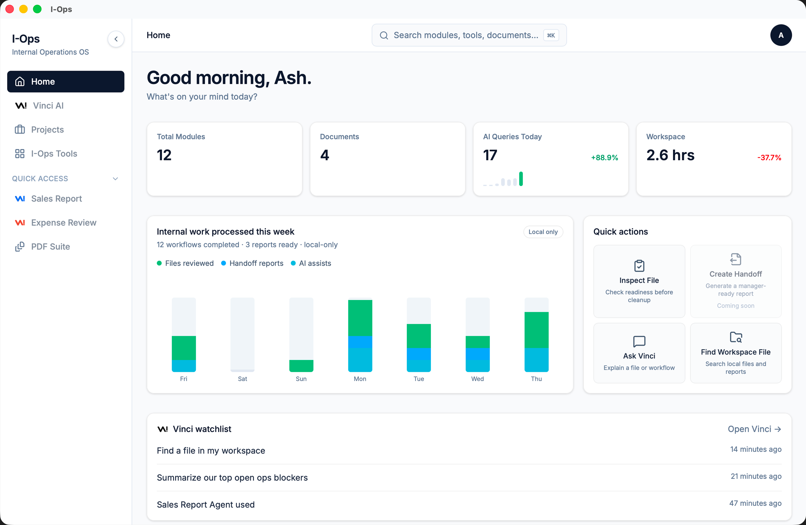

CRM Export.csv
Sales data
Included
Run sensitive workflows, review business files, generate handoffs, and use AI agents on your own machine or local server. Every important action stays visible, approval-based, and under your control.
Local by default · Human-approved · No silent file deletion

Vinci is the private intelligence layer inside I-Ops.
It understands your approved workspace, coordinates specialized local agents, routes context between tasks, applies your permissions and guardrails, and keeps important actions visible until you approve them.
Vinci can work with agents running on your Mac, private workstation, local server, or company-controlled infrastructure without giving any agent unrestricted access.
Interpret approved files, folders, tools, workflows, and internal context.
Route work based on each agent's role, permissions, and capabilities.
Let specialized agents collaborate through Vinci without bypassing I-Ops controls.
Keep sensitive actions, file movements, and external connections visible and approval-based.
Ask Vinci to find files, run analyses, or generate reports. It searches your workspace, confirms every action before running, and logs every step automatically. No surprises.
Vinci connected the relevant context before preparing the summary.
Vinci reviewed 3 approved sources. Two fields need clarification before the manager handoff can be completed.
Based only on the approved files shown here.
Vinci searches only the folders and sources approved through I-Ops, connects relevant context, and prepares grounded summaries for review.
Access stays scoped, source-aware, and visible to your team.
Approved sources only · Grounded results · Local-first processing
Start on one Mac. Expand on your own infrastructure.
Run I-Ops directly on an Apple Silicon Mac today, with a path to company-controlled local servers for shared workflows and more capable private models.
Older versions were found in the current workspace.
Vinci can inspect files, prepare reports, organize outputs, and coordinate workflows while important actions stay visible, approval-based, and logged.
Vinci confirms before it acts. Every file read and report generated is logged with timestamps. Full audit trail built in.
No data ever leaves your machine. No cloud API calls for routine tasks. Private AI that your IT team will actually approve.
Inter, System UI, or JetBrains Mono. Light, dark, or system theme. I-Ops adapts to how your team likes to work.
I-Ops gives local AI agents a structured environment to work inside. It controls what they can access, coordinates how they collaborate, applies guardrails, and keeps every important action visible and reviewable.
Bring agents running on your Mac, workstation, private server, or approved internal environment into one operating layer.
Choose which files, folders, tools, and servers each agent can access. Destructive or sensitive actions stay restricted.
Vinci routes context and work between approved agents so they can complete multi-step tasks without operating outside their assigned roles.
High-impact actions require human approval, and every agent run, file move, output, and decision is logged.
Agents only access approved resources.
I-Ops runs on Apple Silicon today. As AI hardware scales, it gets more powerful. Request private access to be among the first teams to use private local AI for internal operations.
Request Private AccessPurpose-built for every operations team